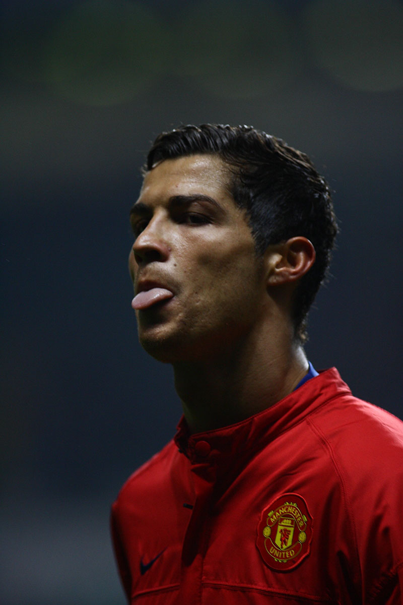
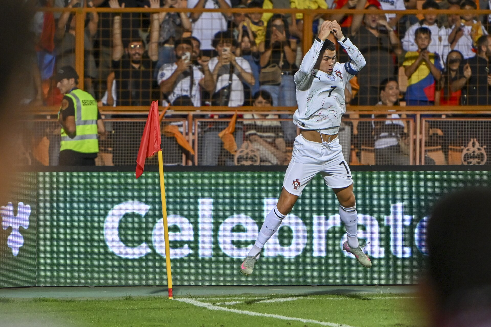
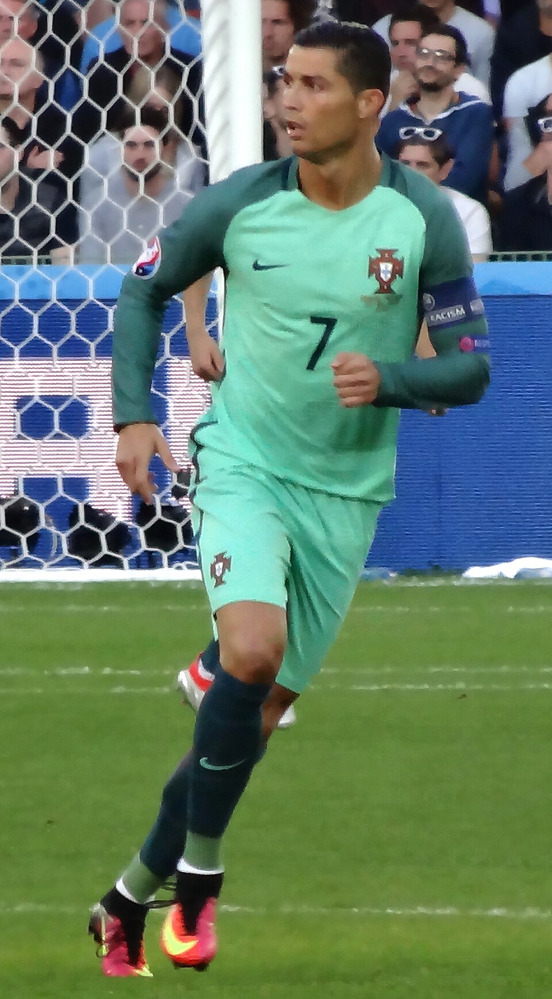
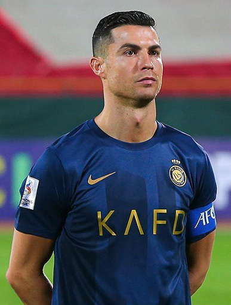

2003 – 2009
Manchester United
Llegó con 18 años y salió como el mejor del mundo: tres Premier League, una Champions y su primer Balón de Oro.
Conocer el clubLABORATORIO 01 — PÁGINA DE FAN
Disciplina, ambición y más de veinte años en la élite.
Delantero portugués y uno de los mejores futbolistas de la historia. Lo escogí porque más allá de los goles, admiro la constancia con la que ha seguido compitiendo al máximo nivel hasta los 41 años.
VER TRAYECTORIA
5
Balones de Oro
5
Champions League
+900
goles oficiales
6
Mundiales jugados
BIOGRAFÍA
Cristiano Ronaldo dos Santos Aveiro nació el 5 de febrero de 1985 en Funchal, en la isla de Madeira, Portugal. Empezó en el Sporting de Lisboa y a los 18 años se fue al Manchester United, donde se convirtió en estrella mundial.
Después jugó en el Real Madrid y la Juventus, regresó al Manchester United y desde 2023 juega en el Al-Nassr de Arabia Saudita. También es el capitán de la selección de Portugal.
| 2008 | Primera Champions y primer Balón de Oro con el Manchester United |
| 2014 – 2018 | Cuatro Champions League con el Real Madrid |
| 2016 | Campeón de la Eurocopa con Portugal |
| 2019 y 2025 | Campeón de la Liga de Naciones de la UEFA con Portugal |
TRAYECTORIA

2003 – 2009
Llegó con 18 años y salió como el mejor del mundo: tres Premier League, una Champions y su primer Balón de Oro.
Conocer el club
2009 – 2018
Su mejor etapa. Es el máximo goleador en la historia del club y ganó cuatro Champions League.
Conocer el club
2016
El primer gran título de su país. Se lesionó en la final, pero siguió apoyando al equipo desde la banda.
Conocer el torneo
2018 – 2021
Ganó dos ligas de Italia y fue goleador de la Serie A, demostrando que podía brillar en otro país.
Conocer el club
2023 – hoy
En Arabia Saudita sigue anotando goles y se convirtió en la figura principal de la liga.
Conocer el clubFAVORITOS
Es la etapa en la que más lo vi jugar. Ganar tres Champions seguidas es algo que casi nadie ha logrado.
Aunque se lesionó en la final, se quedó apoyando a sus compañeros como si fuera el entrenador. Ahí se ve que es un líder.
Ahí empezó todo. Pasó de ser un joven que hacía muchas bicicletas a ser el mejor jugador del mundo.